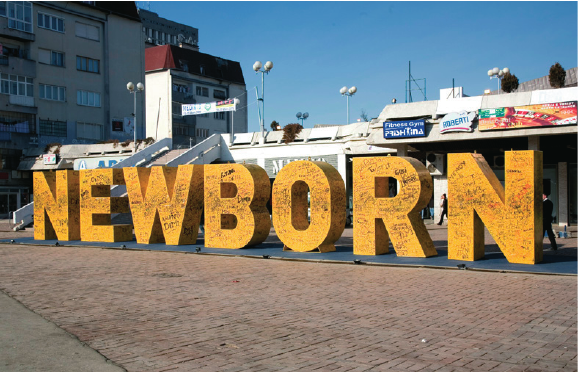
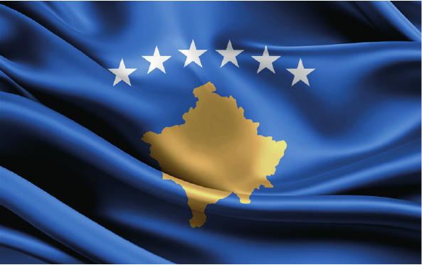

Pavarësia e Kosovës


Fakti 1 për Pavarësinë e Kosovës
Pavarësia e Kosovës
Fakti 2 për Pavarësinë e Kosovës
Fakti 3 për Pavarësinë e Kosovës
Fakti 4 për Pavarësinë e Kosovës
Fakti 5 për Pavarësinë e Kosovës